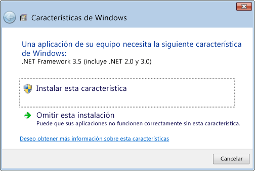
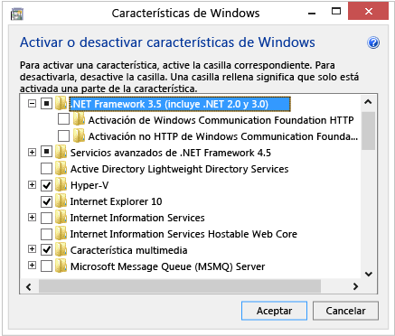

.NET Framework es una parte integral de muchas aplicaciones que se ejecutan en Windows y proporciona la funcionalidad común para que esas aplicaciones puedan ejecutarse. Para los desarrolladores, .NET Framework ofrece un modelo de programación coherente para crear aplicaciones. Si usa el sistema operativo Windows, es posible que .NET Framework ya esté instalado en el equipo. En concreto, .NET Framework 4,5 se incluye con Windows 8 y se instala en el equipo con el sistema operativo Windows 8. De igual modo, .NET Framework 4.5.1 se incluye con Windows 8,1. En otros casos, deberá habilitar .NET Framework para poder ejecutar aplicaciones creadas con este modelo.
|
No hay descarga de .NET Framework 3.5 para Windows 8 o Windows 8.1. Debe habilitar .NET Framework 3.5 en el Panel de control mediante las instrucciones que se indican en este artículo. |
Por ejemplo, .NET Framework 3.5 no se instala automáticamente con Windows 8 o Windows 8,1. Para ejecutar aplicaciones que requieran .NET Framework 3.5 en Windows 8 o versiones posteriores, debe habilitar la versión 3.5 en el equipo. Hay dos maneras de hacer esto: instalar o ejecutar una aplicación que requiera .NET Framework 3.5 (es decir, instalar .NET Framework 3.5 a petición) o habilitar .NET Framework 3.5 en el Panel de control.Ambas opciones requieren una conexión a Internet.
En general, no debe desinstalar ninguna versión de .NET Framework del equipo, ya que una determinada aplicación puede depender de una versión concreta y puede dejar de funcionar si se quita esa versión. Se pueden cargar varias versiones de .NET Framework en un único equipo simultáneamente.Esto significa que no tiene que desinstalar las versiones anteriores para instalar una versión posterior.
Notas importantes:
Si una aplicación requiere .NET Framework 3.5 pero no encuentra esa versión habilitada en el equipo, aparecerá el cuadro de mensaje siguiente durante la instalación o cuando se ejecute la aplicación por primera vez. En el cuadro de mensaje, elija Instalar esta característica para habilitar .NET Framework 3.5. Esta opción requiere una conexión a Internet.
Símbolo del sistema para instalar .NET Framework 3.5 a petición

Puede habilitar .NET Framework 3.5 por sí mismo a través del Panel de control. Esta opción requiere una conexión a Internet.
No necesita seleccionar los elementos secundarios para la activación HTTP de Windows Communication Foundation (WCF) a menos que sea un desarrollador que requiera la funcionalidad de asignación de scripts y controladores de WCF.
Activar o desactivar las características de Windows en el Panel de control

Si la instalación de .NET Framework 3.5 a petición o su habilitación en el Panel de control no se realiza correctamente, aparecerá uno de los siguientes mensajes de error:
Estos mensajes se pueden mostrar por las razones siguientes:
Si no puede conectarse a Internet, puede habilitar .NET Framework 3.5 utilizando la herramienta de línea de comandos Administración y mantenimiento de imágenes de implementación (DISM) y especificando el disco de instalación (imagen ISO o DVD) desde el que instaló Windows 8.
DISM /Online /Enable-Feature /FeatureName:NetFx3 /All /LimitAccess /Source:d:\sources\sxs
donde:
Para más información sobre las opciones y los parámetros de DISM, vea Habilitar o deshabilitar características de Windows con DISM
Si estas instrucciones no corrigen el problema, descargue el documento Consideraciones de implementación de Microsoft .NET Framework 3.5 del Centro de desarrollo de Windows para obtener información más extensa sobre la solución de problemas.
Created with the Personal Edition of HelpNDoc: What is a Help Authoring tool?